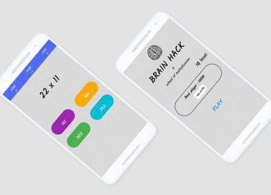
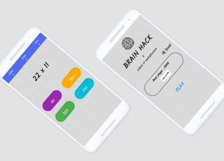

BezalleIT is a Custom Software Development Company
We provide custom software development and IT outsourcing services.
Our developers build custom software for individuals, startups,
and small to medium business.
Based on many years of experience, we know that every business
has a different software and hardware environment.
That is why we
provide a wide range of software development services.
Check out the key services below.
Analytics
We create business software solutions to solve workflow issues that enterprises often face, including:
- Integration of advanced technology apps
- Business process management
- Production process automation
support
Our team can provide support at any stage of custom mobile app development, from creating a proof-of-concept app to an MVP:.
- Cross-platform apps for iOS and Android
- Hybrid and mobile web
- Native apps development
Development
We connect IT systems, microservices & migrate data, including cloud-based data, from one database to another by providing:
- Data integration
- API integration
- Service-oriented architecture (SOA)
System integration.
Our team covers all IT strategies and provides IT consulting services that help optimize your business and make it grow.
- System integration
- Data analytics
- Internet of Things

The Technology Platforms We Use
As an IT firm, we take the perspectives of our clients and their diverse claims in software development. To help you achieve your goals, we enhance our capacities by working with various programming languages, platforms, and new technologies. The list of what we can do is given below..
Learn MoreBusiness App
Mobile apps for business gain popularity on Android as well as on iOS. Almost every small or big business tries to present itself or its services via mobile apps. Here, app stores become an efficient tool for promoting. VironIT delivers Android application development services on medicine, finance, e-commerce, etc.
Games
Mobile game development is a leading branch in IT. Games help to promote services and products, can even earn money for their owners. Game outsourcing companies look for contractors for projects. So, if it sounds familiar to your references, be free to contact us.
Games
Mobile game development is a leading branch in IT. Games help to promote services and products, can even earn money for their owners. Game outsourcing companies look for contractors for projects. So, if it sounds familiar to your references, be free to contact us.
Internet of Things
A new interesting and beneficial sphere in IT is IoT development. We develop software for inter-networking of physical devices connected with each other.
Mapping
We also create different tracking apps for Android devices. For instance, one of our projects is a geolocation app for Ukraine.
 



About Us
BezalleIT is an international software development company established in 2021.
We provide comprehensive services including development of mobile applications,
web-oriented applications,
business software solutions,
as well as software integration and updating, support,
and maintenance of software applications.
This can sometimes happen if you have internet connectivity problems or are running software/plugins that affect your internet traffic.